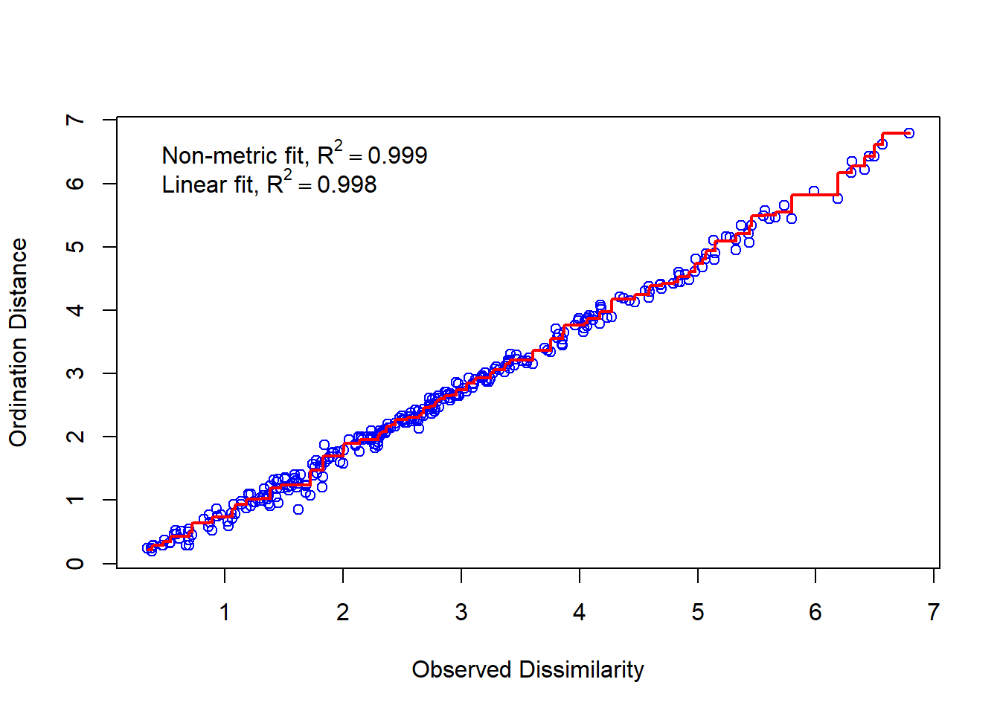
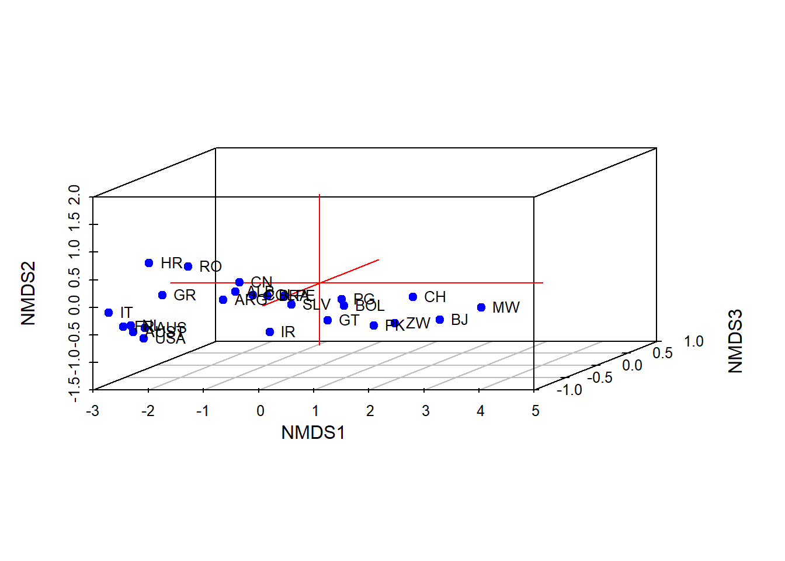

Διατακτική πολυδιάστατη προσαρμογή κλίμακας
Κώστας Κούδας
2025-08-25
1 Παρουσίαση δεδομένων
Στην ενότητα αυτή θα μελετήσουμε διάφορες χώρες ως προς κάποιους δείκτες. Στόχος μας θα είναι να βρούμε πόσες πραγματικά παράμετροι χρειάζονται για την περιγραφή τους και να βρούμε πώς ομαδοποιούνται βάσει αυτών.
Εν προκειμένω αντλήσαμε δεδομένα από την ετήσια στατιστική επετηρίδα των Ηνωμένων Εθνών για το 1997. Οι δείκτες είναι:
ο ετήσιος ποσοστιαίος ρυθμός αύξησης του πληθυσμού (
ayxisi),το προσδόκιμο ζωής σε έτη (
zoi),το ποσοστό βρεφικής θνησιμότητας ανά 1000 γενήσεις (
pbth),το συνολικό ποσοστό γονιμότητας (
spg) καιτο ακαθάριστο κατά κεφαλή εγχώριο προϊόν σε δολάρια ΗΠΑ (
aep),
οι οποίοι παρουσιάζονται στον κάτωθι πίνακα (βλ. επίσης).
xora <- c("ALB","ARG","AUS","AUST","BJ","BOL","BRA","CH","CN","COL","HR","SLV","FR","GR","GT","IR","IT","MW","NL","PK","PG","PE","RO","USA","ZW")
ayxisi <- c(1.2,1.2,1.1,1,3.2,2.4,1.5,2.8,1.1,1.7,-1.5,2.2,0.4,0.6,2.9,2.3,-0.2,3.3,0.7,3.1,1.9,1.7,-0.5,1.1,4.4)
zoi <- c(69.2,68.6,74.7,73,45.9,57.7,64,50.1,66.7,66.4,67.1,63.9,73,75,62.4,67,74.2,45,74.4,60.6,55.2,64.1,66.6,72.5,52.4)
pbth <- c(30,24,7,7,86,75,58,116,44,37,9,46,7,10,48,36,8,143,7,91,68,64,23,9,67)
spg <- c(2.9,2.8,1.9,1.5,7.1,4.8,2.9,5.3,2,2.7,1.7,4,1.7,1.4,5.4,5,1.3,7.2,1.6,6.2,5.1,3.4,1.5,2.1,5)
aep <- c(659.91,4343.04,17529.98,20561.88,398.21,812.19,3219.22,97.39,341.31,1246.87,5400.66,988.58,21076.77,6501.23,831.81,9129.34,19204.92,229.01,18961.9,385.59,839.03,1674.15,1647.97,21965.08,686.75)
deimografikoiDeiktes <- data.frame(XORA=xora, ayxisi=ayxisi, Zoi=zoi, PBTH=pbth, SPG=spg, AEP=aep)| XORA | ayxisi | Zoi | PBTH | SPG | AEP |
|---|---|---|---|---|---|
| ALB | 1.2 | 69.2 | 30 | 2.9 | 659.91 |
| ARG | 1.2 | 68.6 | 24 | 2.8 | 4343.04 |
| AUS | 1.1 | 74.7 | 7 | 1.9 | 17529.98 |
| AUST | 1.0 | 73.0 | 7 | 1.5 | 20561.88 |
| BJ | 3.2 | 45.9 | 86 | 7.1 | 398.21 |
| BOL | 2.4 | 57.7 | 75 | 4.8 | 812.19 |
| BRA | 1.5 | 64.0 | 58 | 2.9 | 3219.22 |
| CH | 2.8 | 50.1 | 116 | 5.3 | 97.39 |
| CN | 1.1 | 66.7 | 44 | 2.0 | 341.31 |
| COL | 1.7 | 66.4 | 37 | 2.7 | 1246.87 |
| HR | -1.5 | 67.1 | 9 | 1.7 | 5400.66 |
| SLV | 2.2 | 63.9 | 46 | 4.0 | 988.58 |
| FR | 0.4 | 73.0 | 7 | 1.7 | 21076.77 |
| GR | 0.6 | 75.0 | 10 | 1.4 | 6501.23 |
| GT | 2.9 | 62.4 | 48 | 5.4 | 831.81 |
| IR | 2.3 | 67.0 | 36 | 5.0 | 9129.34 |
| IT | -0.2 | 74.2 | 8 | 1.3 | 19204.92 |
| MW | 3.3 | 45.0 | 143 | 7.2 | 229.01 |
| NL | 0.7 | 74.4 | 7 | 1.6 | 18961.90 |
| PK | 3.1 | 60.6 | 91 | 6.2 | 385.59 |
| PG | 1.9 | 55.2 | 68 | 5.1 | 839.03 |
| PE | 1.7 | 64.1 | 64 | 3.4 | 1674.15 |
| RO | -0.5 | 66.6 | 23 | 1.5 | 1647.97 |
| USA | 1.1 | 72.5 | 9 | 2.1 | 21965.08 |
| ZW | 4.4 | 52.4 | 67 | 5.0 | 686.75 |
2 Εύρεση διάστασης - έντασης
Κάθε χώρα αναπαρίσταται από πέντε αριθμούς. Π.χ. η Αλβανία
(ALB) αναπαρίσταται από την πεντάδα: 1.2,
69.2, 30, 2.9,
659.91. Είναι όμως αναγκαία η χρήση πέντε παραμέτρων;
Μήπως αυτοί οι πέντε δείκτες μπορούν να συνοψιστούν από, λόγου χάρη, δύο
δείκτες ή και έναν; Αυτό ακριβώς θα εξετάσουμε τώρα.
Καθόσον κάθε χώρα αντιπροσωπεύεται από μια πεντάδα αριθμών, μπορούμε να ορίσουμε την απόσταση δύο χωρών ως την απόσταση δύο τέτοιων πεντάδων1. Μελετώντας τις αποστάσεις αυτές μπορούμε να δούμε αν οι χώρες μπορούν να αναπαρασταθούν με λιγότερες παραμέτρους από πέντε. Δηλαδή ενδέχεται αυτές οι αποστάσεις να περιγράφουν αποστάσεις σημείων πάνω σε μια ευθεία γραμμή, οπότε να απαιτείται η τιμή μόνο μίας παραμέτρου για τον προσδιορισμό κάθε χώρας. Από την άλλη ενδέχεται αυτές οι αποστάσεις να περιγράφουν αποστάσεις σημείων πάνω σε ένα επίπεδο, οπότε να απαιτούνται οι τιμές δύο παραμέτρων για τον προσδιορισμό κάθε χώρας.
Φυσικά, δεν περιμένουμε τα σημεία-χώρες να βρίσκονται όλα ακριβώς
πάνω σ’ ένα επίπεδο. Πάνω-κάτω εννοούμε. Στο περίπου. Με μια σχετική
ακρίβεια. Έτσι με μια σχετική ακρίβεια κείτονται όλες οι χώρες-σημεία
πάνω σε μια ευθεία, με μια άλλη σχετική ακρίβεια κείτονται όλες οι
χώρες-σημεία πάνω σε ένα επίπεδο κ.τ.λ. Εννοείται πως τη μέγιστη
ακρίβεια εν προκειμένω την έχουμε όταν θεωρούμε πως οι χώρες-σημεία
βρίσκονται σ’ ένα χώρο 5 διαστάσεων, τον χώρο των παραμέτρων
ayxisi, zoi, pbth,
spg και aep.
Εμείς όμως δεν επιδιώκουμε την απόλυτη ακρίβεια, η οποία μπορεί ήδη να είναι θύμα τυχαίων παρεμβολών, ανακριβειών των μετρήσεων κ.τ.λ. Επιδιώκουμε να βγάλουμε συμπυκνωμένα νοήματα με μια αποδεκτή (όχι άπειρη) ακρίβεια. Αυτό το μέγεθος ακριβείας το αποκαλούμε ένταση του Kruskal. Με άλλα λόγια, περιορίζοντας τις παραμέτρους από 5 σε π.χ. 2 οι αποστάσεις μεταξύ των χωρών-σημείων αλλάζουν. Το μέτρο καλής προσαρμογής είναι η ένταση. Ακολουθεί μια ενδεικτική λίστα περί του πώς ερμηνεύουμε τις εκάστοτε εντάσεις:
Αν, διαλέγοντας κάποιο πλήθος παραμέτρων, η ένταση προκύψει μικρότερη από 0.05, τότε αυτό το πλήθος αποτελεί εξαιρετικό τρόπο αναπαράστασης.
Αν, διαλέγοντας κάποιο πλήθος παραμέτρων, η ένταση προκύψει 0.05, 0.06, 0.07, 0.08 ή 0.09, τότε αυτό το πλήθος αποτελεί καλή επιλογή χωρίς πραγματικό κίνδυνο εξαγωγής εσφαλμένων συμπερασμάτων.
Αν, διαλέγοντας κάποιο πλήθος παραμέτρων, η ένταση προκύψει 0.10, 0.11, 0.12, 0.13, … , 0.19 τότε αυτό το πλήθος μπορεί να είναι χρήσιμο, αλλά έχει τη δυνατότητα να παραπλανήσει. Ειδικότερα, δεν πρέπει να δοθεί μεγάλη έμφαση στις λεπτομέρειες.
Αν, διαλέγοντας κάποιο πλήθος παραμέτρων, η ένταση προκύψει 0.20, 0.21, 0.22, 0.23, … , 0.34 τότε αυτό το πλήθος θα μπορούσε να είναι επικίνδυνο να ερμηνευτεί. Έχουμε κακή προσαρμογή.
Αν, διαλέγοντας κάποιο πλήθος παραμέτρων, η ένταση προκύψει πάνω από 0.35 τότε αυτό το πλήθος δεν είναι καθόλου κατάλληλο. Έχουμε κάκιστη προσαρμογή.
Πάμε πίσω στα δεδομένα μας! Για να απαντήσουμε τα παραπάνω ερωτήματα
θα χρησιμοποιήσουμε τη συνάρτηση
eyresiDiastasis(📝📝📝, entasi = 🧗🧗🧗, ar_epan=🎼🎼🎼, metriki = 📐📐📐).
Ακολουθεί η περιγραφή των συμβόλων:
Στη θέση του
📝📝📝γράφουμε τον πίνακα δεδομένων μας, εν προκειμένω τοdeimografikoiDeiktes. Εδώ θα πρέπει να προσέξουμε ο πίνακας να είναι σε παρόμοια μορφή με τονdeimografikoiDeiktes. Δηλαδή η πρώτη στήλη να έχει τα αντικείμενα που θέλουμε να μελετήσουμε και κάθε γραμμή να είναι οι τιμές που περιγράφουν το κάθε αντικείμενο.Στη θέση του
🧗🧗🧗πάει η ένταση κάτω από την οποία επιδιώκουμε να βρεθούμε. Κοντολογίς τον βαθμό ακριβείας. Αν αφήσουμε κενό το κομμάτιentasi = 🧗🧗🧗, τότε συμπληρώνεται αυτόματα το 0.05.Η διαδικασία με την οποία λειτουργεί η συνάρτηση
eyresiDiastasis()είναι δοκιμής-επαλήθευσης-επανάληψης. Στη θέση του🎼🎼🎼μπορούμε να βάλουμε το πλήθος των δοκιμών που θέλουμε να γίνει. Αν αφήσουμε κενή την επιλογήar_epan=🎼🎼🎼, συμπληρώνεται αυτομάτως το 500.Τέλος στη θέση του
📐📐📐συμπληρώνουμε τη μετρική που θέλουμε να χρησιμοποιηθεί για τον υπολογισμό των αποστάσεων. Η προκαθορισμένη είναι η ευκλείδεια ("euclidean"), αλλά μπορούμε να επιλέξουμε μία από τις"manhattan","gower","altGower","canberra","clark","bray","kulczynski","morisita","horn","binomial"και"cao".
Για να κατασκευαστεί η συνάρτηση eyresiDiastasis() θα
χρειαστούμε το πακέτο vegan το οποίο και εγκαθιστούμε.
Έτοιμοι λοιπόν για την συνάρτησή μας:
eyresiDiastasis <- function(dedomena, entasi = 0.05, ar_epan=500, metriki = "euclidean"){
dedomenaS <- scale(dedomena[,-1])
dissimilarities <- vegdist(dedomenaS,metriki)
k0 <- 1
nmds_result <- metaMDS(dissimilarities, k = k0, trymax=ar_epan, trace=FALSE)
stress0 <- nmds_result$stress
while (k0 < length(dedomena[1,]) && entasi<stress0) {
k0 <- k0+1
nmds_result <- metaMDS(dissimilarities, k = k0, trymax=ar_epan, trace=FALSE)
stress0 <- nmds_result$stress
}
print(paste("Η διάσταση είναι",k0,"και η ένταση είναι ",stress0,"."))
stressplot(nmds_result)
}Έτσι, εκτελώντας την παρακάτω εντολή έχουμε τον απαιτούμενο αριθμό διαστάσεων για να έχουμε εξαιρετική ακρίβεια προσαρμογής.
## [1] "Η διάσταση είναι 2 και η ένταση είναι 0.0248713194718483 ."Το γράφημα που προκύπτει είναι το γράφημα των αποστάσεων. Πρακτικά είναι ένα διάγραμμα διασποράς, όπου συσχετίζει τις πραγματικές αποστάσεις με αυτές που προκύπτουν από την μείωση της διάστασης.
Κάποιος, όμως, μπορεί να μην καλύπτεται με την ακρίβεια προσαρμογής της τάξης του 0.05. Μπορεί να θέλει ακρίβεια μεγαλύτερη, δηλαδή μικρότερη ένταση. Πόσες θα πρέπει να ήταν οι απαιτούμενες διαστάσεις, αν θέλαμε να έχουμε ένταση π.χ. 0.02. Αυτό έρχεται να μας απαντήσει η κάτωθι εντολή.
## [1] "Η διάσταση είναι 3 και η ένταση είναι 0.0124986409620639 ."Παρατηρούμε ότι υπάρχει μεγαλύτερη ταύτιση θεωρητικών και παρατηρούμενων αποστάσεων, όπερ αναμενόμενο, αφού επιλέξαμε ένταση πιο μικρή από πριν.
Κάποιες φορές μπορεί να χρειαστεί να πάρουμε ανάποδα το πράγμα.
Μπορεί να έχουμε έναν επιθυμητό αριθμό διαστάσεων-παραμέτρων και να
θέλουμε να δούμε πόσο καλά προσαρμόζονται τα δεδομένα μας σ’ αυτό το
πλήθος διαστάσεων. Σε αυτό θα μας βοηθήσει η συνάρτηση
eyresiEntasis(📝📝📝, diastasi =🎭🎭🎭, ar_epan=🎼🎼🎼, metriki = 📐📐📐).
Ακολουθεί η περιγραφή των συμβόλων:
Στη θέση του
📝📝📝γράφουμε τον πίνακα δεδομένων μας, εν προκειμένω τοdeimografikoiDeiktes. Εδώ θα πρέπει να προσέξουμε ο πίνακας να είναι σε παρόμοια μορφή με τονdeimografikoiDeiktes. Δηλαδή η πρώτη στήλη να έχει τα αντικείμενα που θέλουμε να μελετήσουμε και κάθε γραμμή να είναι οι τιμές που περιγράφουν το κάθε αντικείμενο.Στη θέση του
🎭🎭🎭γράφουμε το πλήθος των παραμέτρων που θέλουμε να εξετάσουμε ως προς την ένταση. Μπορούμε να αφήσουμε κενό το κομμάτιdiastasi =🎭🎭🎭, οπότε συμπληρώνεται αυτόματα το 2.Η διαδικασία με την οποία λειτουργεί η συνάρτηση
eyresiDiastasis()είναι δοκιμής-επαλήθευσης-επανάληψης. Στη θέση του🎼🎼🎼μπορούμε να βάλουμε το πλήθος των δοκιμών που θέλουμε να γίνει. Αν αφήσουμε κενή την επιλογήar_epan=🎼🎼🎼, συμπληρώνεται αυτομάτως το 500.Τέλος στη θέση του
📐📐📐συμπληρώνουμε τη μετρική που θέλουμε να χρησιμοποιηθεί για τον υπολογισμό των αποστάσεων. Η προκαθορισμένη είναι η ευκλείδεια ("euclidean"), αλλά μπορούμε να επιλέξουμε μία από τις"manhattan","gower","altGower","canberra","clark","bray","kulczynski","morisita","horn","binomial"και"cao".
Ιδού η συνάρτησή μας:
eyresiEntasis <- function(dedomena, diastasi = 2, ar_epan=500, metriki = "euclidean"){
dedomenaS <- scale(dedomena[,-1])
dissimilarities <- vegdist(dedomenaS,metriki)
k0 <- 1
nmds_result <- metaMDS(dissimilarities, k = k0, trymax=ar_epan, trace=FALSE)
stress0 <- nmds_result$stress
while (k0 < min(diastasi,length(dedomena[1,]))) {
k0 <- k0+1
nmds_result <- metaMDS(dissimilarities, k = k0, trymax=ar_epan, trace=FALSE)
stress0 <- nmds_result$stress
}
print(paste("Η διάσταση είναι",k0,"και η ένταση είναι ",stress0,"."))
stressplot(nmds_result)
}Εκτελώντας την κάτωθι εντολή βρίσκουμε πόσο βαθμό ακρίβειας θα έχουμε αν διαλέξουμε δύο μόνο παραμέτρους για να περιγράφουν την κατανομή των χωρών μας.
## [1] "Η διάσταση είναι 2 και η ένταση είναι 0.0248713193671372 ."
Τι γίνεται, όμως, αν επιδιώξουμε να κατατάξουμε τις χώρες σε μια ευθεία αριθμογραμμή; Φτάνει μια παράμετρος για να κατατάξει τις χώρες μας;
## [1] "Η διάσταση είναι 1 και η ένταση είναι 0.117045035019002 ."
Βλέπουμε ότι προκύπτει ένταση 0.117045035019002, όπερ υποδηλώνει ενδεχομένως παραπλανητική επάρκεια της μίας διάστασης, κάτι που φαίνεται και από το διάγραμμα, όπου οι προσαρμοσμένες-θεωρητικές αποστάσεις φαίνεται να έχουν έντονες αποκλίσεις από τις πραγματικές.
3 Γραφική αναπαράσταση
Το ενδιαφέρον της μεθόδου δεν σταματά εδώ. Στην περίπτωση που
προκύψουν 2 ή 3 διαστάσεις-παράμετροι μπορούμε να απεικονίσουμε τα
δεδομένα μας σε ένα αντίστοιχο γράφημα. Για την περίπτωση που θέλουμε να
δουλέψουμε και με τρισδιάστατα γραφήματα θα χρειαστούμε το πακέτο
vegan3d.
Για να μην μακρηγορούμε, η συνάρτησή μας είναι η
PoPrKlim(📝📝📝, diastasi =🎭🎭🎭, ar_epan=🎼🎼🎼, metriki = 📐📐📐).
Ακολουθεί η περιγραφή των συμβόλων:
Στη θέση του
📝📝📝γράφουμε τον πίνακα δεδομένων μας, εν προκειμένω τοdeimografikoiDeiktes. Εδώ θα πρέπει να προσέξουμε ο πίνακας να είναι σε παρόμοια μορφή με τονdeimografikoiDeiktes. Δηλαδή η πρώτη στήλη να έχει τα αντικείμενα που θέλουμε να μελετήσουμε και κάθε γραμμή να είναι οι τιμές που περιγράφουν το κάθε αντικείμενο.Στη θέση του
🎭🎭🎭γράφουμε το πλήθος των διαστάσεων. Μπορούμε να αφήσουμε κενό το κομμάτιdiastasi =🎭🎭🎭, οπότε συμπληρώνεται αυτόματα το 2.Η διαδικασία με την οποία λειτουργεί η συνάρτηση
eyresiDiastasis()είναι δοκιμής-επαλήθευσης-επανάληψης. Στη θέση του🎼🎼🎼μπορούμε να βάλουμε το πλήθος των δοκιμών που θέλουμε να γίνει. Αν αφήσουμε κενή την επιλογήar_epan=🎼🎼🎼, συμπληρώνεται αυτομάτως το 500.Τέλος στη θέση του
📐📐📐συμπληρώνουμε τη μετρική που θέλουμε να χρησιμοποιηθεί για τον υπολογισμό των αποστάσεων. Η προκαθορισμένη είναι η ευκλείδεια ("euclidean"), αλλά μπορούμε να επιλέξουμε μία από τις"manhattan","gower","altGower","canberra","clark","bray","kulczynski","morisita","horn","binomial"και"cao".
Ορίστε η συνάρτησή μας:
PoPrKlim <- function(dedomena, diastasi = 2, ar_epan=500, metriki = "euclidean"){
dedomenaS <- scale(dedomena[,-1])
dissimilarities <- vegdist(dedomenaS,metriki)
nmds_result <- metaMDS(dissimilarities, k = diastasi, trymax=ar_epan, trace=FALSE)
if (diastasi == 2){
ordiplot(nmds_result, type = "n")
points(nmds_result$points, col = "blue", pch = 19)
text(nmds_result$points, labels = dedomena[,1], pos = 4, cex = 0.8)
} else if (diastasi == 3) {
ordiplot3d(nmds_result, type = "n")
points(nmds_result$points, col = "blue", pch = 19)
text(nmds_result$points, labels = dedomena[,1], pos = 4, cex = 0.8)
}
}Εκτελώντας, λοιπόν, την παρακάτω εντολή έχουμε την προκαθορισμένη δισδιάστατη απεικόνιση των χωρών.
## species scores not availableΑπό την άλλη, κάποιος που θα ήθελε να απεικονίσει τις χώρες μας σε ένα τρισδιάστατο σύστημα συντεταγμένων, μπορεί να εκτελέσει τα κάτωθι:

Για κάτι πιο διαδραστικό θα χρησιμοποιήσουμε το πακέτο
rgl και θα φτιάξουμε μια καινούρια συνάρτηση, την
PoPrKlim_interactive αμμειγώς για 3D.
if(!require(rgl)){
install.packages("rgl")
library(rgl)
}
# Η Συνάρτηση
PoPrKlim_interactive <- function(dedomena, ar_epan = 500, metriki = "euclidean"){
# Κλιμάκωση των δεδομένων, εξαιρουμένης της πρώτης στήλης με τις ετικέτες
dedomenaS <- scale(dedomena[,-1])
# Υπολογισμός των ανομοιοτήτων
dissimilarities <- vegdist(dedomenaS, metriki)
# Δημιουργία του NMDS με k = 3
nmds_result <- metaMDS(dissimilarities, k = 3, trymax = ar_epan, trace = FALSE)
# Δημιουργία του διαδραστικού 3D γραφήματος με το 'rgl'
# Χρησιμοποιούμε τη συνάρτηση plot3d
plot3d(nmds_result$points,
type = "p",
col = "blue",
size = 8,
xlab = "NMDS1",
ylab = "NMDS2",
zlab = "NMDS3")
# Προσθήκη των ετικετών των σημείων
text3d(nmds_result$points,
texts = dedomena[,1],
adj = c(-0.2, -0.2),
cex = 0.8)
# Προσθήκη των αξόνων
axes3d()
# Προσθήκη του πλαισίου
box3d()
# Εμφάνιση του γραφήματος
# Το rgl.snapshot() ή η αποθήκευση σε html είναι απαραίτητα για την εμφάνιση στο τελικό αρχείο
# Στο R Markdown, το γράφημα θα εμφανιστεί αυτόματα ως διαδραστικό
# Επιστρέφει το διαδραστικό widget για ενσωμάτωση στο HTML
return(rglwidget())
}Έτσι έχουμε:
Βεβαίως, όπως είδαμε και στην προηγούμενη ενότητα, οι δύο διαστάσεις είναι υπεραρκετές.
Ένα ερώτημα που ίσως έχει απασχολήσει από πριν τον αναγνώστη είναι
«Και ποιοι είναι οι παράμετροι NMDS1 και NMDS2
οι οποίοι περιγράφουν τις χώρες μας;». Αυτό η παρούσα ανάλυση δεν μπορεί
να το απαντήσει. Ίσως να είναι δύο εκ των ayxisi,
zoi, pbth, spg και
aep. Ίσως να είναι δύο συνδυασμοί αυτών. Ίσως και να είναι
δύο τελείως καινούριες παράμετροι, οι οποίες απλά να συνεπιρεάζουν τους
παράγοντες ayxisi, zoi, pbth,
spg και aep. Η απάντηση σε αυτή την ερώτηση
σίγουρα θέλει παραπάνω δουλειά από αυτόν τον μικρό κώδικα.
Συνολικά ο κώδικας που γράψαμε είναι ο εξής:
xora <- c("ALB","ARG","AUS","AUST","BJ","BOL","BRA","CH","CN","COL","HR","SLV","FR","GR","GT","IR","IT","MW","NL","PK","PG","PE","RO","USA","ZW")
ayxisi <- c(1.2,1.2,1.1,1,3.2,2.4,1.5,2.8,1.1,1.7,-1.5,2.2,0.4,0.6,2.9,2.3,-0.2,3.3,0.7,3.1,1.9,1.7,-0.5,1.1,4.4)
zoi <- c(69.2,68.6,74.7,73,45.9,57.7,64,50.1,66.7,66.4,67.1,63.9,73,75,62.4,67,74.2,45,74.4,60.6,55.2,64.1,66.6,72.5,52.4)
pbth <- c(30,24,7,7,86,75,58,116,44,37,9,46,7,10,48,36,8,143,7,91,68,64,23,9,67)
spg <- c(2.9,2.8,1.9,1.5,7.1,4.8,2.9,5.3,2,2.7,1.7,4,1.7,1.4,5.4,5,1.3,7.2,1.6,6.2,5.1,3.4,1.5,2.1,5)
aep <- c(659.91,4343.04,17529.98,20561.88,398.21,812.19,3219.22,97.39,341.31,1246.87,5400.66,988.58,21076.77,6501.23,831.81,9129.34,19204.92,229.01,18961.9,385.59,839.03,1674.15,1647.97,21965.08,686.75)
deimografikoiDeiktes <- data.frame(XORA=xora, ayxisi=ayxisi, Zoi=zoi, PBTH=pbth, SPG=spg, AEP=aep)
if(!require(vegan)){
install.packages("vegan")
library(vegan)
}
eyresiDiastasis <- function(dedomena, entasi = 0.05, ar_epan=500, metriki = "euclidean"){
dedomenaS <- scale(dedomena[,-1])
dissimilarities <- vegdist(dedomenaS,metriki)
k0 <- 1
nmds_result <- metaMDS(dissimilarities, k = k0, trymax=ar_epan, trace=FALSE)
stress0 <- nmds_result$stress
while (k0 < length(deimografikoiDeiktes[1,]) && entasi<stress0) {
k0 <- k0+1
nmds_result <- metaMDS(dissimilarities, k = k0, trymax=ar_epan, trace=FALSE)
stress0 <- nmds_result$stress
}
print(paste("Η διάσταση είναι",k0,"και η ένταση είναι ",stress0,"."))
stressplot(nmds_result)
}
eyresiDiastasis(deimografikoiDeiktes)
eyresiDiastasis(deimografikoiDeiktes, entasi=0.02)
eyresiEntasis <- function(dedomena, diastasi = 2, ar_epan=500, metriki = "euclidean"){
dedomenaS <- scale(dedomena[,-1])
dissimilarities <- vegdist(dedomenaS,metriki)
k0 <- 1
nmds_result <- metaMDS(dissimilarities, k = k0, trymax=ar_epan, trace=FALSE)
stress0 <- nmds_result$stress
while (k0 < min(diastasi,length(deimografikoiDeiktes[1,]))) {
k0 <- k0+1
nmds_result <- metaMDS(dissimilarities, k = k0, trymax=ar_epan, trace=FALSE)
stress0 <- nmds_result$stress
}
print(paste("Η διάσταση είναι",k0,"και η ένταση είναι ",stress0,"."))
stressplot(nmds_result)
}
eyresiEntasis(deimografikoiDeiktes)
eyresiEntasis(deimografikoiDeiktes, diastasi = 1)
if(!require(vegan3d)){
install.packages("vegan3d")
library(vegan3d)
}
PoPrKlim <- function(dedomena, diastasi = 2, ar_epan=500, metriki = "euclidean"){
dedomenaS <- scale(dedomena[,-1])
dissimilarities <- vegdist(dedomenaS,metriki)
nmds_result <- metaMDS(dissimilarities, k = diastasi, trymax=ar_epan, trace=FALSE)
if (diastasi == 2){
ordiplot(nmds_result, type = "n")
points(nmds_result$points, col = "blue", pch = 19)
text(nmds_result$points, labels = dedomena[,1], pos = 4, cex = 0.8)
} else if (diastasi == 3) {
ordiplot3d(nmds_result, type = "n")
points(nmds_result$points, col = "blue", pch = 19)
text(nmds_result$points, labels = dedomena[,1], pos = 4, cex = 0.8)
}
}
PoPrKlim(deimografikoiDeiktes)
PoPrKlim(deimografikoiDeiktes, diastasi = 3)
if(!require(rgl)){
install.packages("rgl")
library(rgl)
}
# Η Συνάρτηση
PoPrKlim_interactive <- function(dedomena, ar_epan = 500, metriki = "euclidean"){
# Κλιμάκωση των δεδομένων, εξαιρουμένης της πρώτης στήλης με τις ετικέτες
dedomenaS <- scale(dedomena[,-1])
# Υπολογισμός των ανομοιοτήτων
dissimilarities <- vegdist(dedomenaS, metriki)
# Δημιουργία του NMDS με k = 3
nmds_result <- metaMDS(dissimilarities, k = 3, trymax = ar_epan, trace = FALSE)
# Δημιουργία του διαδραστικού 3D γραφήματος με το 'rgl'
# Χρησιμοποιούμε τη συνάρτηση plot3d
plot3d(nmds_result$points,
type = "p",
col = "blue",
size = 8,
xlab = "NMDS1",
ylab = "NMDS2",
zlab = "NMDS3")
# Προσθήκη των ετικετών των σημείων
text3d(nmds_result$points,
texts = dedomena[,1],
adj = c(-0.2, -0.2),
cex = 0.8)
# Προσθήκη των αξόνων
axes3d()
# Προσθήκη του πλαισίου
box3d()
# Εμφάνιση του γραφήματος
# Το rgl.snapshot() ή η αποθήκευση σε html είναι απαραίτητα για την εμφάνιση στο τελικό αρχείο
# Στο R Markdown, το γράφημα θα εμφανιστεί αυτόματα ως διαδραστικό
# Επιστρέφει το διαδραστικό widget για ενσωμάτωση στο HTML
return(rglwidget())
}
PoPrKlim_interactive(deimografikoiDeiktes)Σε ό,τι ακολουθεί η απόσταση που χρησιμοποιείται είναι η ευκλείδεια. Ο αναγνώστης, όμως, μπορεί να επιλέξει κάποια άλλη, όπως θα δούμε παρακάτω.↩︎